When viewing the Spaces Status screen, you can click on a Space name to see details about the Space:
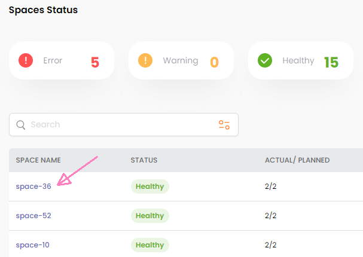
The resulting screen has three tabs:
The Monitoring tab displays graphs showing various Space-related statistics.
Note that a dropdown list on the right side of the screen allows you to change the reported time interval:
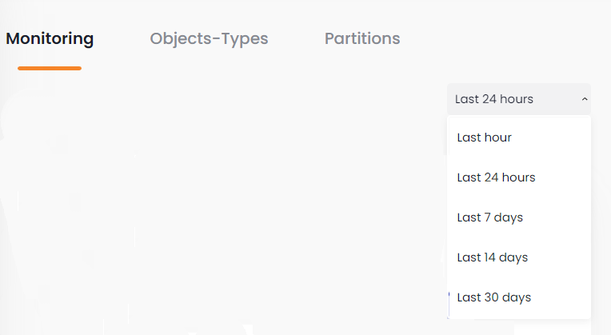
The following graphs are available:
This graph shows the I/O operations over time. You can click on the operation type (Execute, Update, etc.) or view the Total for all operation types (default),
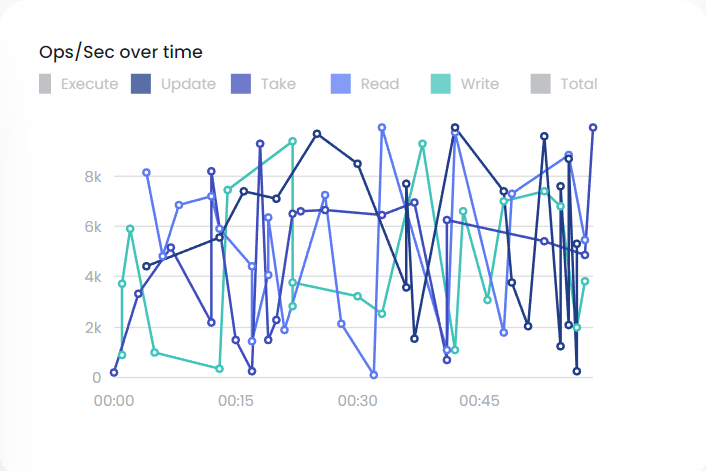
This graph displays the memory utilization over time, as the percent of memory used in the Space.
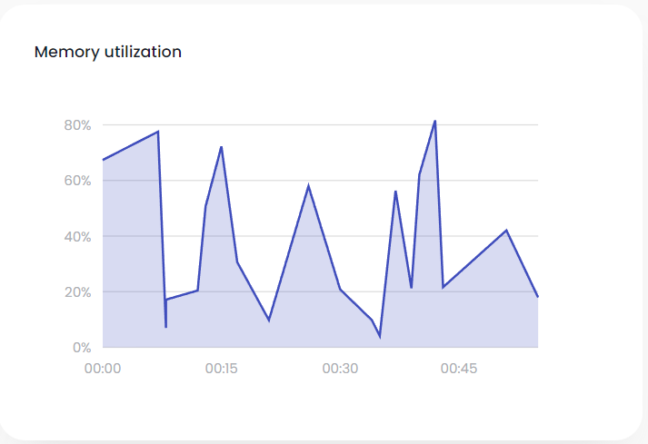
This graph displays the percent of the CPU that was used in the Space.
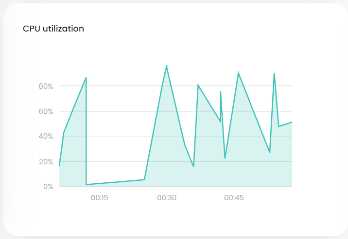
These bar charts show up to five instances (object types) with the highest number of objects (rows). The
average line indicates the average number of objects for all object types.
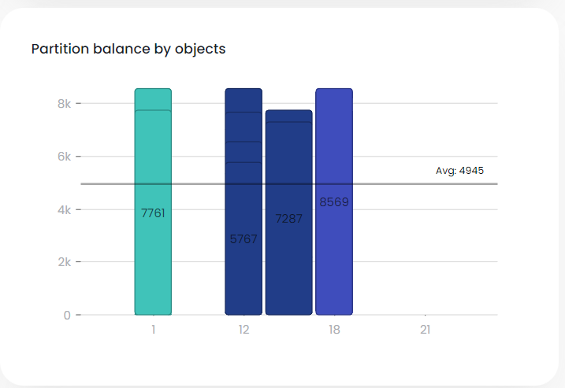
These bar charts show up to five instances (object types) with the highest memory usage. The
average line indicates the average memory usage for all object types.
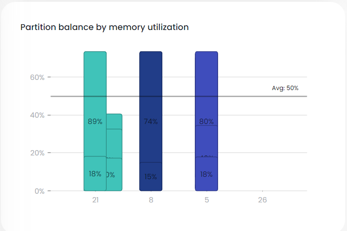
This graphs shows the Tiered Storage hit to hot storage (RAM memory; left side of graph) and to warm storage (SSD memory; right side of graph).
Note that if Tiered Storage is not defined, this graph will display as empty.
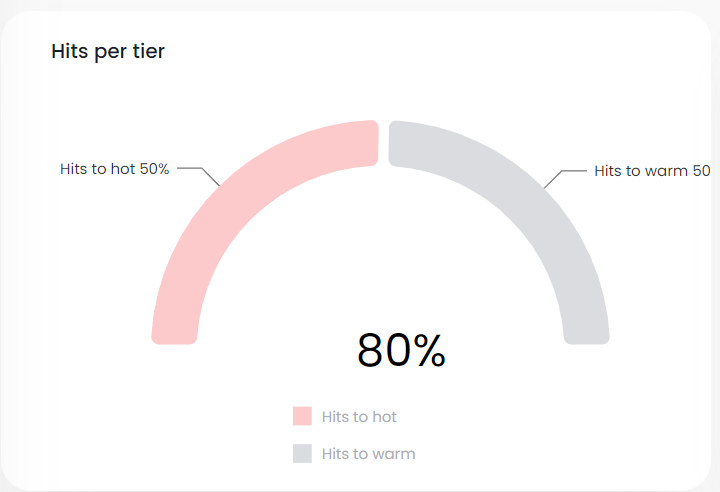
This graphs shows up to five Tiered Storage objects with the greatest divergence from the expected usage. You can scroll this graph to show all objects in descending order (by distance from expected).
Note that if Tiered Storage is not defined, this graph will display as empty.
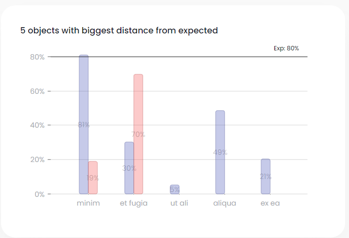
This graph shows the size of the redo log over time.
Note that you can click on the dropdown list (total in this example) to specify a specific instance.
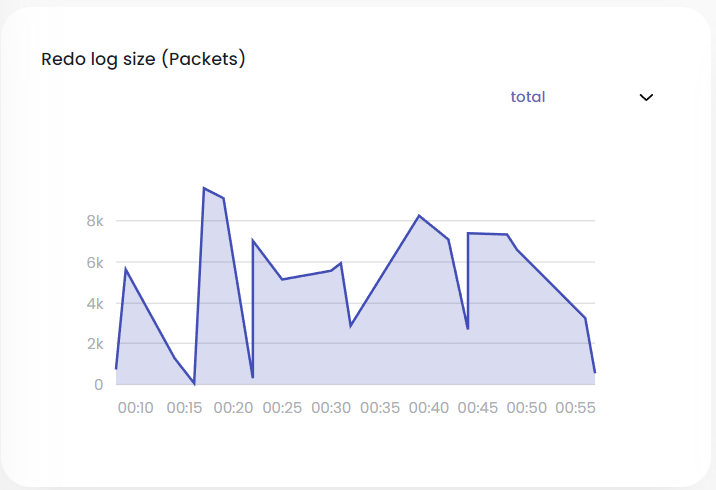
This graph shows the percent of the redo log memory that was used over time.
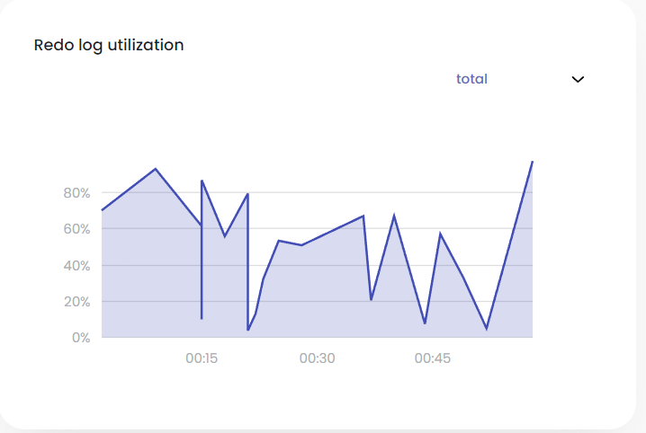
This graph shows the percentage of the redo log that is currently in RAM and in SSD.
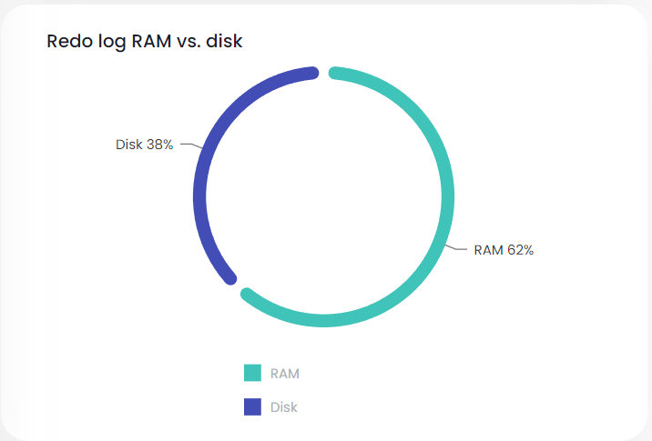
The Objects-Types tab displays a list of the object types (tables) associated with the Space.
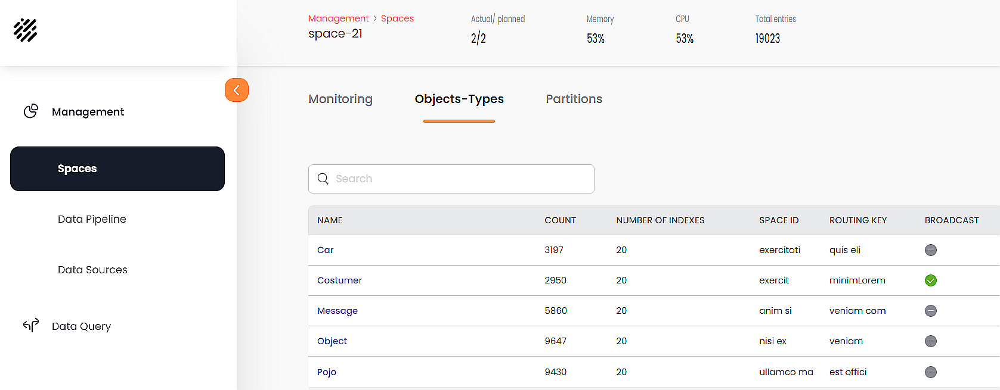
Each row represents one object-type (table) in the Space. The object-type fields are as follows:
Click on one of the object types to see detailed information for the object type's properties and indexes. The Object-Types information is divided into three categories:
Tiered Storage option:
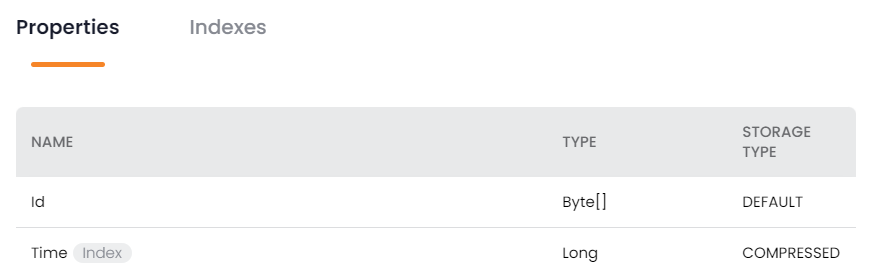
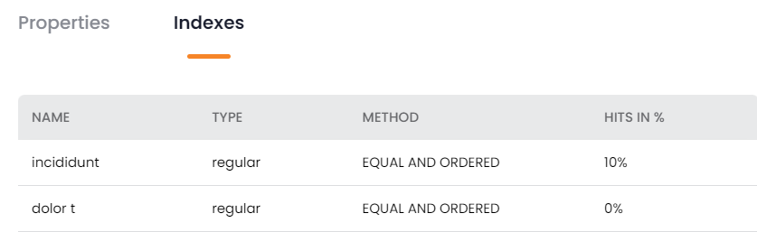
The Partitions tab displays details about the partitions where the Space data is stored.
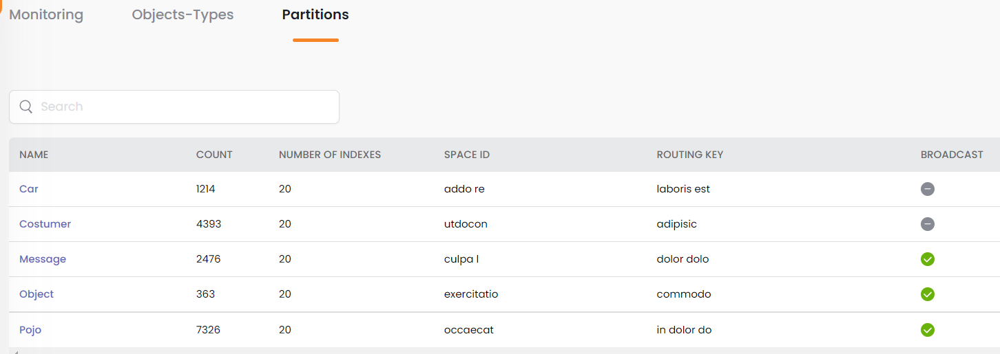
You can also click on the name of the Object Type (e.g. Car in this example) to view and modify the Object Type properties, as discussed above.